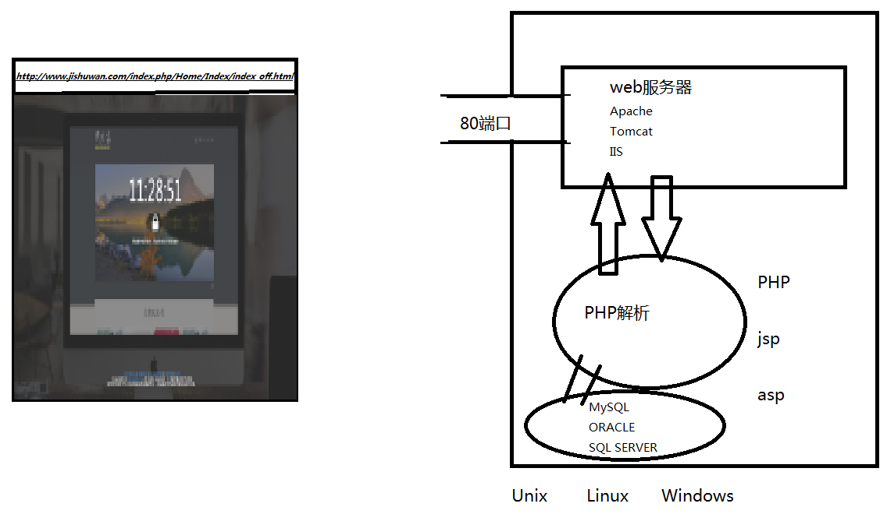

第 2 章 PHP程序开发---前端技术
1:网页是构成网站的基本元素，是各种网站应用的基本平台；通俗的说，一个网站由若干个网页组成。
2:网页是一个文件，它可以存放在世界某个角落的某一台计算机中，是万维网中的一“页”，是超文本 标记语言格式，文件扩展名为.html或.htm）。网页通常用图像档来提供图画。网页要透过网页浏览器 来阅读。
● 静态网页
静态网页，其内容是预先确定的，并存储在Web服务器或者本地计算机/服务器之上。。
特点：
制作速度快，成本低。
模板一旦确定下来，不容易修改，更新比较费时费事
常用于制作一些固定板式的页面。
通常用于文本和图像组成，常用于子页面的内容介绍。
对服务器性能要求较低，但对存储压力相对较大。
● 动态网页
动态网页，是取决于由用户提供的参数，并根据存储在数据库中的网站上的数据中创建的页面。
通俗地讲，静态页是照片，每个人看都是一样的，而动态页则是镜子，不同的人（不同的参数）看都 不相同。
● 感知信息
文本：文本是网页上最重要的信息载体和交流工具，网页中的主要信息一般都以文本形式为主。
图像：图像元素在网页中具有提供信息并展示直观形象的作用。
静态图像：在页面中可能是光栅图形或矢量图形。通常为GIF，JPEG或PNG；或矢量格式，如SVG或Flash。
动画图像：通常动画为GIF和SVG。
Flash动画：动画在网页中的作用是有效地吸引访问者更多的注意。
声音：声音是多媒体和视频网页重要的组成部分。
视频：视频文件的采用是网页效果更加精彩且富有动感。
表格：表格是在网页中用来控制面业信息的布局方式。
导航栏：导航栏在网页中是一组超链接，其连接的目的端是网页中重要的页面。
交互式表单：表单在网页中通常用来联系数据库并接受访问用户在浏览器端输入的数据。利用服务器的数据库为客户端与服务器端提供更多的互动。
● WEB2.0注重用户的交互作用，用户即是网站的浏览者也是网站内容的创建者！
电子商务 - 移动互联 - 云计算
经过翻译解释的，用文件来保存的语言。经过翻译解释的，用文件来保存的语言。
WEB工作原理

URL
几种主流的WEB应用程序平台
网页的设计对于工具的要求不是太高，小至一个文本文档工具都可以做出一个网页，但是有一个好的设计工具，更能很好的帮助我们。
常用的设计工具有：
1: Dreamweaver 网页三剑客。
2: Sublime Text
3: Notepad++
4: Microsoft FrontPage
等等，还有很多.......
作业：
1: 深入了解B/S结构和C/S结构的区别
2: 掌握web服务器的基本原理
3: 明白什么是脚本
4: 了解w3c
上一节 首 页 下一节